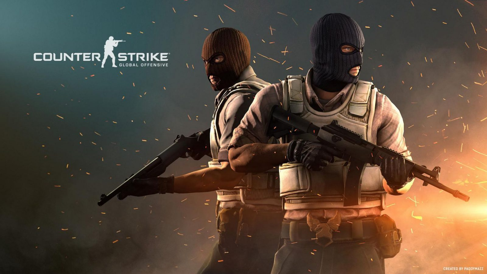
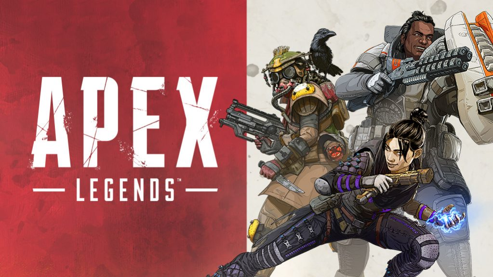
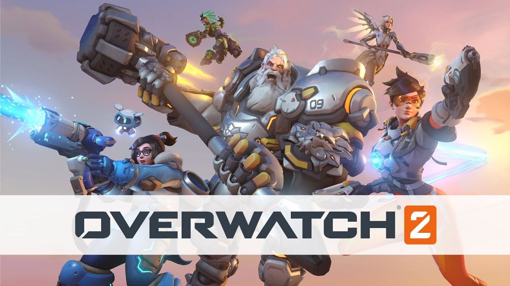

Valorant adalah permainan video FPS (First Person) gratis yang dikembangkan
dan diterbitkan oleh Riot Games, untuk Microsoft Windows. Pertama kali menggoda dengan nama kode Project A pada Oktober 2019, permainan
memulai periode beta tertutup dengan akses terbatas pada 7 April 2020, diikuti dengan perilisan resmi pada 2 Juni 2020. Pengembangan
permainan dimulai pada 2014.
Counter Strike : Global Offensive

Anda yang merupakan anak warnet, pastinya tahu kan game FPS terbaik PC Counter Strike 1.6?
Nah game Counter Strike: Global Offensive ini merupakan serial upgrade dari game lawas tersebut yang mendapatkan berbagai
peningkatan entah itu dari sisi grafis, gameplay, dan lainnya.
Game PC tembak-tembakan ini juga bisa dibilang merupakan game ber-genre FPS yang benar-benar memberikan pengalaman “nyata”
kepada pemainnya saat ikut berperang bersama teman-teman.
Apex Legends

Apex Legends yang dikembangkan oleh Respawn Entertainment. Game tembak-tembakan online terbaik di PC dengan gameplay paling seru
ini pertama dirilis untuk Windows, PlayStation 4, dan Xbox One pada bulan Februari 2019.
Meski genre utamanya adalah FPS, Apex Legends sebenarnya dikombinasikan dengan alur permainan ala Battle Royale. Pasalnya, di game
ini ada 60 orang yang dipertemukan dan dipertarungkan dalam satu tempat.
Call Of Duty : Modern Warfare
Call of Duty: Modern Warfare. Sekadar informasi, game FPS PC terbaik 2021 yang satu ini dikembangkan oleh Infinity Ward
dan dipublikasikan oleh Activision.
Call of Duty: Modern Warfare sendiri merupakan remake dari game berjudul sama yang dirilis pada 2007 silam. Kala itu, permainan
tersebut memang banyak dimainkan oleh para gamers.
OverWatch 2

Overwatch 2 resmi diluncurkan di PC, PS5, Xbox Series S dan X, serta Nintendo Switch.
Berbeda dengan Overwatch pertama, game Overwatch 2 ini bisa di-download dan dimainkan secara gratis dari toko aplikasi
masing-masing platform.
Overwatch 2 sendiri hadir sebagai pengganti dari judul game orisinalnya, Overwatch, yang diluncurkan Blizzard Entertainment
pada 2016 lalu.
Hadir dengan User Interface/UI dan desain karakter yang lebih segar, Overwatch 2 turut menawarkan mode serta pengalaman bermain
yang berbeda dibandingkan seri pertamanya.